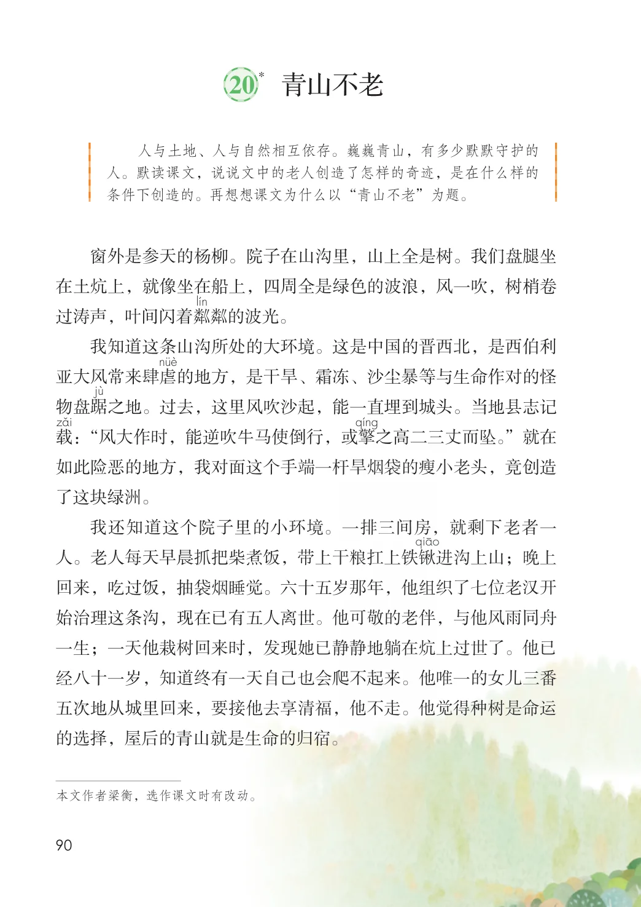
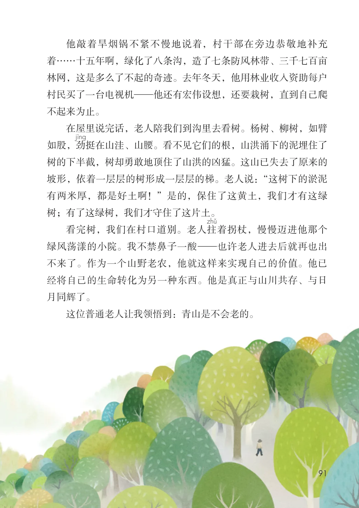

第六单元 · 第 20 课
青山不老
文字内容 PDF 第 95 页
*
课后练习
- 人与土地、人与自然相互依存。巍巍青山，有多少默默守护的人。默读课文，说说文中的老人创造了怎样的奇迹，是在什么样的条件下创造的。再想想课文为什么以“青山不老”为题。窗外是参天的杨柳。院子在山沟里，山上全是树。我们盘腿坐在土炕上，就像坐在船上，四周全是绿色的波浪，风一吹，树梢卷过涛声，叶间闪着粼粼的波光。我知道这条山沟所处的大环境。这是中国的晋西北，是西伯利亚大风常来肆虐的地方，是干旱、霜冻、沙尘暴等与生命作对的怪物盘踞之地。过去，这里风吹沙起，能一直埋到城头。当地县志记载：“风大作时，能逆吹牛马使倒行，或擎之高二三丈而坠。”就在如此险恶的地方，我对面这个手端一杆旱烟袋的瘦小老头，竟创造了这块绿洲。我还知道这个院子里的小环境。一排三间房，就剩下老者一人。老人每天早晨抓把柴煮饭，带上干粮扛上铁锹进沟上山；晚上回来，吃过饭，抽袋烟睡觉。六十五岁那年，他组织了七位老汉开始治理这条沟，现在已有五人离世。他可敬的老伴，与他风雨同舟一生；一天他栽树回来时，发现她已静静地躺在炕上过世了。他已经八十一岁，知道终有一天自己也会爬不起来。他唯一的女儿三番五次地从城里回来，要接他去享清福，他不走。他觉得种树是命运
- 的选择，屋后的青山就是生命的归宿。
文字内容 PDF 第 96 页
他敲着旱烟锅不紧不慢地说着，村干部在旁边恭敬地补充着……十五年啊，绿化了八条沟，造了七条防风林带、三千七百亩林网，这是多么了不起的奇迹。去年冬天，他用林业收入资助每户村民买了一台电视机—他还有宏伟设想，还要栽树，直到自己爬不起来为止。
在屋里说完话，老人陪我们到沟里去看树。杨树、柳树，如臂如股，劲挺在山洼、山腰。看不见它们的根，山洪涌下的泥埋住了树的下半截，树却勇敢地顶住了山洪的凶猛。这山已失去了原来的坡形，依着一层层的树形成一层层的梯。老人说：“这树下的淤泥有两米厚，都是好土啊！”是的，保住了这黄土，我们才有这绿树；有了这绿树，我们才守住了这片土。
看完树，我们在村口道别。老人拄着拐杖，慢慢迈进他那个绿风荡漾的小院。我不禁鼻子一酸—也许老人进去后就再也出不来了。作为一个山野老农，他就这样来实现自己的价值。他已经将自己的生命转化为另一种东西。他是真正与山川共存、与日月同辉了。
这位普通老人让我领悟到：青山是不会老的。
原版对照
原书页面与全部插图
点击图片可查看大图。

